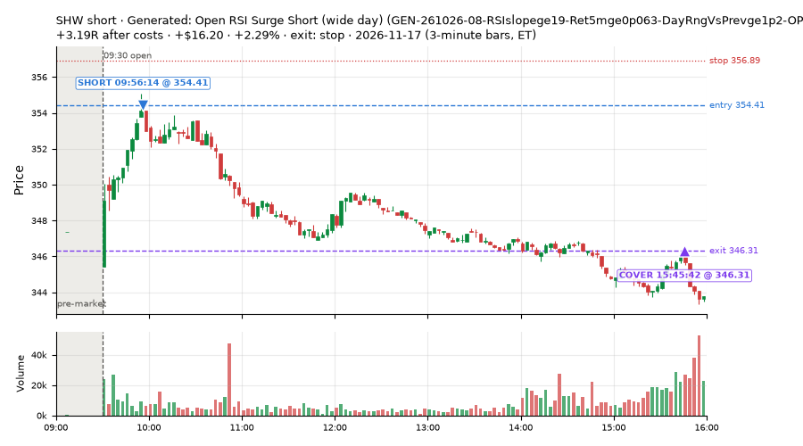
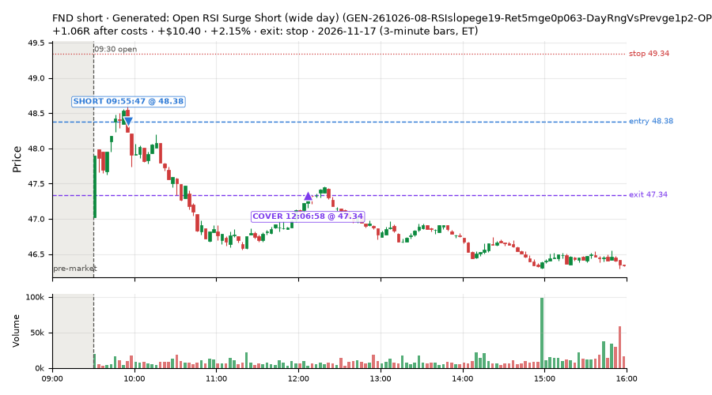
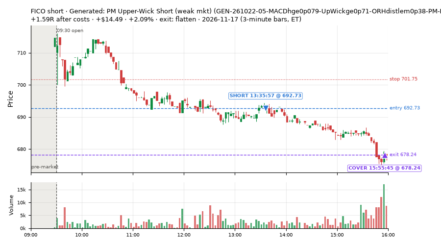
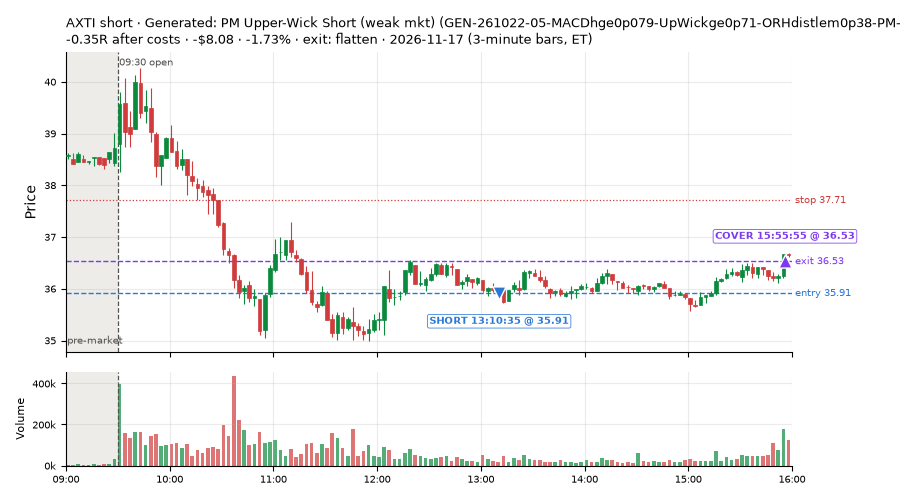
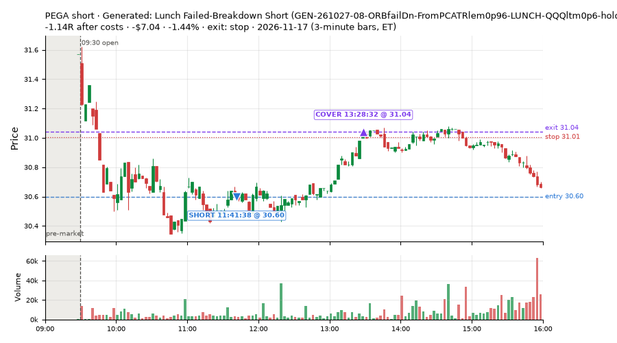
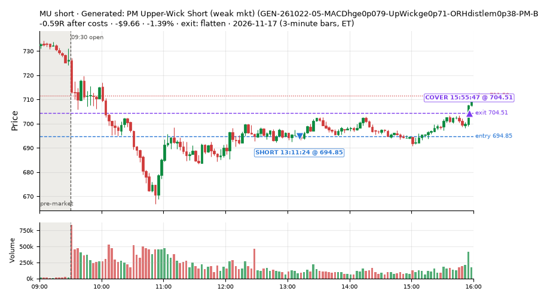
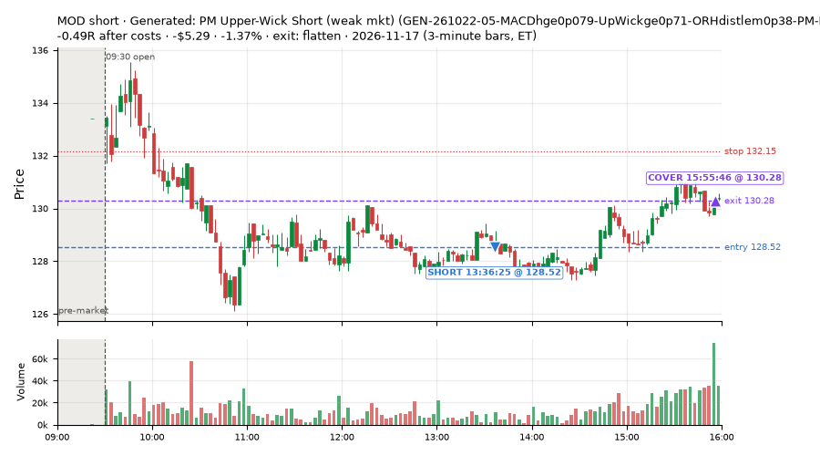
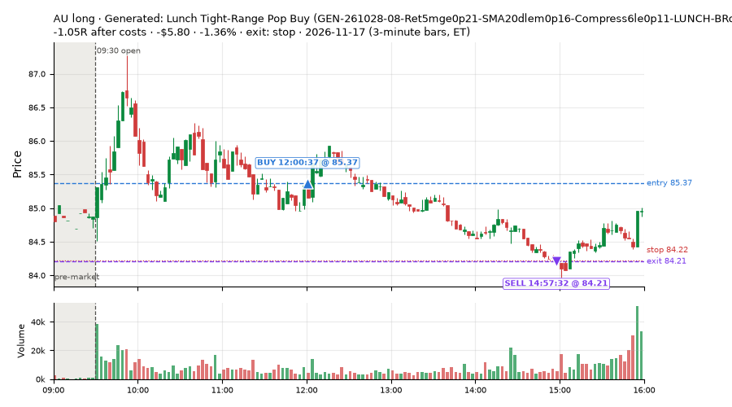

91 trades · win rate 46% · P/L $9.88
PROBATION: no live setup has passed both locked test periods. 10 owner-directed setups added 2026-10-08 (MarcoFlow top 5 + 5 new), untested live. RW6G1 (RW6 + VWAP band guard) added 2026-10-09, probation.

| Symbol | Setup | Side | In | Out | Entry | Exit | Exit reason | % gained | P/L |
|---|---|---|---|---|---|---|---|---|---|
| SHW | Generated: Open RSI Surge Short (wide day) (GEN-261026-08-RSIslopege19-Ret5mge0p063-DayRngVsPrevge1p2-OPEN-SPYup-holdtr-short) | short | 09:56 | 15:45 | 354.41 | 346.31 | stop | +2.29% | $16.20 |
| FND | Generated: Open RSI Surge Short (wide day) (GEN-261026-08-RSIslopege19-Ret5mge0p063-DayRngVsPrevge1p2-OPEN-SPYup-holdtr-short) | short | 09:55 | 12:06 | 48.38 | 47.34 | stop | +2.15% | $10.40 |
| FICO | Generated: PM Upper-Wick Short (weak mkt) (GEN-261022-05-MACDhge0p079-UpWickge0p71-ORHdistlem0p38-PM-BRoplt0p35-holdtr-short) | short | 13:35 | 15:55 | 692.73 | 678.24 | flatten | +2.09% | $14.49 |
| Symbol | Setup | Side | In | Out | Entry | Exit | Exit reason | % lost | P/L |
|---|---|---|---|---|---|---|---|---|---|
| AXTI | GEN-261022-05-MACDhge0p079-UpWickge0p71-ORHdistlem0p38-PM-BRoplt0p35-holdtr-short | short | 13:10 | 15:55 | 35.91 | 36.53 | flatten | -1.73% | $-8.08 |
| PEGA | GEN-261027-08-ORBfailDn-FromPCATRlem0p96-LUNCH-QQQltm0p6-hold-short | short | 11:41 | 13:28 | 30.60 | 31.04 | stop | -1.44% | $-7.04 |
| MU | GEN-261022-05-MACDhge0p079-UpWickge0p71-ORHdistlem0p38-PM-BRoplt0p35-holdtr-short | short | 13:11 | 15:55 | 694.85 | 704.51 | flatten | -1.39% | $-9.66 |
| MOD | GEN-261022-05-MACDhge0p079-UpWickge0p71-ORHdistlem0p38-PM-BRoplt0p35-holdtr-short | short | 13:36 | 15:55 | 128.52 | 130.28 | flatten | -1.37% | $-5.29 |
| AU | GEN-261028-08-Ret5mge0p21-SMA20dlem0p16-Compress6le0p11-LUNCH-BRoplt0p35-holdtr-long | long | 12:00 | 14:57 | 85.37 | 84.21 | stop | -1.36% | $-5.80 |








Signal to fill: median 2s, 90th percentile 4s (91 trades). Bars close each minute; the order follows the bar close.
Best excursion (MFE): median 0.45R; worst (MAE) median 0.51R. 26% of trades never got +0.25R in our favour; 0 reached +1R and still closed at or below 0.
| Symbol | Setup | Best R | Worst R | Closed R |
|---|---|---|---|---|
| CCJ | GEN-261020-03-MACDhge0p079-BarsSinceLODle5-MID-BRvwlt0p3-t05s05-long | +0.98 | -1.03 | -1.11 |
| MHK | GEN-261028-08-Ret5mge0p21-SMA20dlem0p16-Compress6le0p11-LUNCH-BRoplt0p35-holdtr-long | +0.90 | -1.01 | -1.09 |
| FLTW | GEN-261020-03-MACDhge0p079-BarsSinceLODle5-MID-BRvwlt0p3-t05s05-long | -0.13 | -2.00 | -2.01 |
| ADI | ST4-emadn-long-am-t1s05-FD | +0.63 | -1.13 | -1.20 |
| SYK | GEN-261026-08-RSIslopege19-Ret5mge0p063-DayRngVsPrevge1p2-OPEN-SPYup-holdtr-short | +0.66 | -1.10 | -1.10 |
| Entry time | Trades | Win | Avg R | P/L |
|---|---|---|---|---|
| 09:50-10:30 | 13 | 85% | +1.02 | $74.81 |
| 10:30-11:30 | 3 | 0% | -1.45 | $-10.81 |
| 11:30-13:00 | 29 | 31% | -0.25 | $-21.29 |
| 13:00-14:00 | 40 | 48% | -0.11 | $-22.52 |
| 14:00-16:00 | 6 | 50% | -0.18 | $-10.31 |
| Setup | Trades | Win | Avg R after costs | Adj R (net of SPY) | Avg R ex-market (all sessions) | P/L |
|---|---|---|---|---|---|---|
| Stretched Below VWAP Bounce (far) (CWT13-vwapstretch-z075-long) | 1.0 | 100% | +0.74 | +0.70 | -0.05 (beta +1.19, n 24) | $3.54 |
| Generated: Midday Low Bounce Buy (MACD up) (GEN-261020-03-MACDhge0p079-BarsSinceLODle5-MID-BRvwlt0p3-t05s05-long) | 3.0 | 0% | -1.45 | -1.08 | -1.35 (beta -0.03, n 5) | $-10.81 |
| Generated: PM Upper-Wick Short (weak mkt) (GEN-261022-05-MACDhge0p079-UpWickge0p71-ORHdistlem0p38-PM-BRoplt0p35-holdtr-short) | 19.0 | 47% | +0.05 | -0.05 | -0.11 (beta -1.35, n 28) | $-3.01 |
| Generated: PM Prior-High Dip Buy (QQQ down) (GEN-261023-04-EMAdChglem0p028-PDHdistle0p074-EMAdifflem0p46-PM-QQQltm0p6-t1s1-long) | 2.0 | 50% | -0.04 | +0.04 | – | $-0.91 |
| Generated: Open RSI Surge Short (wide day) (GEN-261026-08-RSIslopege19-Ret5mge0p063-DayRngVsPrevge1p2-OPEN-SPYup-holdtr-short) | 12.0 | 83% | +0.96 | +0.13 | -1.59 (beta -3.34, n 12) | $69.05 |
| Generated: Lunch Failed-Breakdown Short (GEN-261027-08-ORBfailDn-FromPCATRlem0p96-LUNCH-QQQltm0p6-hold-short) | 6.0 | 33% | -0.04 | +0.01 | -0.07 (beta -0.76, n 23) | $-5.42 |
| Generated: Lunch Tight-Range Pop Buy (GEN-261028-08-Ret5mge0p21-SMA20dlem0p16-Compress6le0p11-LUNCH-BRoplt0p35-holdtr-long) | 33.0 | 45% | -0.12 | -0.10 | -0.14 (beta +0.20, n 67) | $-8.52 |
| Generated: Midday Choppy Oversold Buy (GEN-261029-02-RSI2le0-VWAPcrossesge9-DayRngVsPrevle0p52-MID-BRvwlt0p4-hold-long) | 7.0 | 0% | -0.97 | -1.07 | -0.93 (beta -1.25, n 16) | $-23.61 |
| Early Sellers, Mid-High RSI (MF2-open-rsimidhi-flowsell) owner-directed; holdouts once: Sep-Oct -0.108R n41, Apr-Jun +0.046R n171 | 1.0 | 100% | +1.69 | +0.61 | -0.31 (beta -1.85, n 13) | $5.76 |
| EMA Cross-Down Dip Buy (all day) (ST4-emadn-long-am-t1s05-FD) | 6.0 | 50% | -0.32 | -0.12 | +0.23 (beta +2.71, n 10) | $-4.91 |
| RSI Collapse Dip Buy, Nasdaq-below-VWAP only (all day) (ST7Q-rsi50dn-qqqbelowvwap-long-t1s1-FD) | 1.0 | 0% | -1.18 | -1.16 | -0.06 (beta +0.70, n 9) | $-11.28 |
Market direction (SPY, beta 1) accounted for $47.34 of today's $9.88; the rest ($-37.46) came from the setups themselves. Avg R net of SPY: -0.15 (incl. a hedge leg's cost; report only).
25 setups live today. Today: 188 signals, 91 taken, 6 lost because another setup held the symbol (3%). Since 2026-11-05 (9 sessions): 802 signals, 283 taken, 10 lost to other setups (1%). Peak open positions today 69 of 400 slots. Earnings blackout removed 329 symbols before scanning.
Simulated playing time (not live): 518 what-if trades of signals not taken, avg -0.05R, 49% winners; of them 10 lost to another setup (avg -0.01R).
Silent: IDX1-qqq100-0955-TQQQ-hold, IDX2-spy075-0945-3x-trail, IDX5-spy050-0945-3x-trail, LD4-st4-breadthup-t1s05-long, LD8-spy-dip030-breadthturn-spxl-holdtr-long
| Prio | Setup | Today sig / taken | Sessions | Signals / taken / trades | Taken/day | Expected/day | Lost to other setups | Lost to (setup n) | Top skip reasons | SIMULATED: not-taken n / avg R / win | Verdict |
|---|---|---|---|---|---|---|---|---|---|---|---|
| 1 | Late-Day ETF Dip Buy — WB1: dip inside an up-hour NM-ETF-late-dip-di-long-WB1 | 0 / 0 | 1 | 0 / 0 / 0 | 0.00 | – | 0 | – | – | 0 / – | quiet - wait no signals in 1 session(s); too early to tell |
| 2 | Gap-Down Rebound Overbought Short (all day) — WB4: no thin-R names, RSI(5) ≤ 90, slope ≤ 1.0 L3-gap-slope-rsi5hi-FD-WB4 | 7 / 0 | 1 | 7 / 0 / 0 | 0.00 | – | 0 | – | not shortable / shorts off 6, spread / quote / size 1 | 7 / +0.30R / 86% | slow no entries yet |
| 3 | Generated: Late Failed-Breakdown Pop Short — WB4: 14:30-15:00, pop >= 0.20 ATR, ADX(7) >= 44 GEN-261023-09-ORBfailDn-Ret15mge0p54-LATE-BRvwgt0p7-holdtr-short-WB4 | 0 / 0 | 1 | 0 / 0 / 0 | 0.00 | – | 0 | – | – | 0 / – | quiet - wait no signals in 1 session(s); too early to tell |
| 4 | Index Dip Bounce 1 TQQQ (hold) IDX1-qqq100-0955-TQQQ-hold | 0 / 0 | 9 | 0 / 0 / 0 | 0.00 | – | 0 | – | – | 0 / – | silent no signals in 9 session(s); no expected rate on file |
| 5 | * Oversold Slope Turn after an SPY Dip-Turn (near-miss) LD3-st2-idxturn-t05s1-long | 0 / 0 | 9 | 1 / 1 / 1 | 0.11 | – | 0 | – | – | 0 / – | slow 0.6 entries/week; ~108 weeks to 60 trades |
| 6 | * Oversold Pop with Breadth Turning Up (near-miss) LD1-ns1-breadthup-t05s1-long | 0 / 0 | 9 | 7 / 5 / 5 | 0.56 | – | 0 | – | spread / quote / size 1, price through stop/target 1 | 2 / -0.30R / 50% | slow 2.8 entries/week; ~22 weeks to 60 trades |
| 7 | Generated: Midday Low Bounce Buy (MACD up) GEN-261020-03-MACDhge0p079-BarsSinceLODle5-MID-BRvwlt0p3-t05s05-long | 44 / 3 | 2 | 56 / 5 / 5 | 2.50 | – | 0 | – | spread / quote / size 35, other 16 | 50 / -0.35R / 42% | slow 12.5 entries/week; ~5 weeks to 60 trades |
| 8 | Backside Lower-High Short CWT04-backside-lh-a15-short | 0 / 0 | 9 | 4 / 0 / 0 | 0.00 | – | 0 | – | not shortable / shorts off 4 | 4 / +0.55R / 50% | slow no entries yet |
| 9 | Generated: Late Volume Spike Buy (wide day) GEN-261019-07-VolRatioge2-UpWickge0p59-DayRngVsPrevge1p5-LATE-SPYgt0p5-t05s1-long | 0 / 0 | 2 | 0 / 0 / 0 | 0.00 | – | 0 | – | – | 0 / – | quiet - wait no signals in 2 session(s); too early to tell |
| 10 | Generated: Lunch Failed-Breakdown Short GEN-261027-08-ORBfailDn-FromPCATRlem0p96-LUNCH-QQQltm0p6-hold-short | 9 / 6 | 2 | 34 / 23 / 23 | 11.50 | – | 0 | – | spread / quote / size 5, other 5, not shortable / shorts off 1 | 11 / +0.28R / 64% | ok 57.5 entries/week |
| 11 | Generated: PM Upper-Wick Short (weak mkt) GEN-261022-05-MACDhge0p079-UpWickge0p71-ORHdistlem0p38-PM-BRoplt0p35-holdtr-short | 32 / 19 | 2 | 47 / 28 / 28 | 14.00 | – | 7 | GEN-261028-08-Ret5mge0p21-SMA20dlem0p16-Compress6le0p11-LUNCH-BRoplt0p35-holdtr-long 6, ST4-emadn-long-am-t1s05-FD 1 | symbol held by another setup 7, other 6, not shortable / shorts off 3 | 19 / -0.03R / 53% | ok 70.0 entries/week |
| 12 | Generated: Lunch Tight-Range Pop Buy GEN-261028-08-Ret5mge0p21-SMA20dlem0p16-Compress6le0p11-LUNCH-BRoplt0p35-holdtr-long | 43 / 33 | 2 | 144 / 67 / 67 | 33.50 | – | 2 | NM1-cwt09-g10-vwaploss-short 1, GEN-261027-08-ORBfailDn-FromPCATRlem0p96-LUNCH-QQQltm0p6-hold-short 1 | per-setup cap 55, spread / quote / size 10, other 9 | 77 / -0.12R / 36% | ok 167.5 entries/week |
| 13 | Gap-Down VWAP Loss Short, Slope Filter (near-miss) NM1-cwt09-g10-vwaploss-short | 0 / 0 | 9 | 78 / 4 / 4 | 0.44 | – | 0 | – | not shortable / shorts off 68, other 4, spread / quote / size 2 | 74 / -0.01R / 55% | slow 2.2 entries/week; ~27 weeks to 60 trades |
| 14 | Generated: Late-AM Below-Range Turn Buy GEN-261028-05-EMAdChgge0p093-ORLdistlem0p42-LAM-QQQgt0p6-holdtr-long | 0 / 0 | 2 | 0 / 0 / 0 | 0.00 | – | 0 | – | – | 0 / – | quiet - wait no signals in 2 session(s); too early to tell |
| 15 | Generated: PM Prior-High Dip Buy (QQQ down) GEN-261023-04-EMAdChglem0p028-PDHdistle0p074-EMAdifflem0p46-PM-QQQltm0p6-t1s1-long | 3 / 2 | 2 | 12 / 4 / 4 | 2.00 | – | 0 | – | other 5, spread / quote / size 3 | 8 / -0.29R / 50% | slow 10.0 entries/week; ~6 weeks to 60 trades |
| 16 | NS2 Up-3 Short, QQQ Up, Slope Down (near-miss) NM-RWR4-ns2-up3-qqqup-slopedn-short | 0 / 0 | 9 | 46 / 27 / 27 | 3.00 | – | 0 | – | spread / quote / size 13, not shortable / shorts off 4, other 2 | 19 / +0.17R / 84% | ok 15.0 entries/week |
| 17 | RSI Collapse Dip Buy, Nasdaq-below-VWAP only (all day) ST7Q-rsi50dn-qqqbelowvwap-long-t1s1-FD | 3 / 1 | 9 | 18 / 9 / 9 | 1.00 | – | 0 | – | spread / quote / size 7, other 2 | 9 / -0.32R / 33% | slow 5.0 entries/week; ~12 weeks to 60 trades |
| 18 | Early NS3 Short While SPY Up (near-miss) NM-RWN3-ns3-spyup-early-short | 0 / 0 | 9 | 19 / 7 / 7 | 0.78 | – | 0 | – | not shortable / shorts off 6, spread / quote / size 5, other 1 | 12 / +0.69R / 83% | slow 3.9 entries/week; ~15 weeks to 60 trades |
| 19 | Generated: PM Gap-Up Dip Buy (MACD falling) GEN-261029-03-MACDhlem0p12-Ret5mlem0p062-Gapge2-PM-QQQup-hold-long | 0 / 0 | 2 | 0 / 0 / 0 | 0.00 | – | 0 | – | – | 0 / – | quiet - wait no signals in 2 session(s); too early to tell |
| 20 | Early Sellers, Mid-High RSI MF2-open-rsimidhi-flowsell | 3 / 1 | 9 | 53 / 13 / 13 | 1.44 | 1.30 | 0 | – | per-setup cap 19, spread / quote / size 12, not shortable / shorts off 5 | 40 / -0.58R / 18% | slow 7.2 entries/week; ~8 weeks to 60 trades |
| 21 | Generated: Open RSI Surge Short (wide day) GEN-261026-08-RSIslopege19-Ret5mge0p063-DayRngVsPrevge1p2-OPEN-SPYup-holdtr-short | 23 / 12 | 2 | 23 / 12 / 12 | 6.00 | – | 0 | – | spread / quote / size 11 | 11 / +2.15R / 82% | ok 30.0 entries/week |
| 22 | Generated: Midday Choppy Oversold Buy GEN-261029-02-RSI2le0-VWAPcrossesge9-DayRngVsPrevle0p52-MID-BRvwlt0p4-hold-long | 8 / 7 | 2 | 19 / 16 / 16 | 8.00 | – | 0 | – | other 2, spread / quote / size 1 | 3 / -0.83R / 33% | ok 40.0 entries/week |
| 23 | Stretched Below VWAP Bounce (far) CWT13-vwapstretch-z075-long | 2 / 1 | 9 | 118 / 24 / 24 | 2.67 | – | 0 | – | per-setup cap 67, spread / quote / size 15, other 12 | 94 / -0.13R / 43% | slow 13.3 entries/week; ~4 weeks to 60 trades |
| 24 | Down-Stock Volume Spike Buy (all day) ST8-volspikedn-long-pm-t1s1-FD | 0 / 0 | 9 | 26 / 18 / 18 | 2.00 | 1.05 | 1 | MF2-open-rsimidhi-flowsell 1 | spread / quote / size 5, other 2, symbol held by another setup 1 | 8 / +0.02R / 75% | slow 10.0 entries/week; ~6 weeks to 60 trades |
| 25 | EMA Cross-Down Dip Buy (all day) ST4-emadn-long-am-t1s05-FD | 11 / 6 | 3 | 18 / 10 / 10 | 3.33 | 2.77 | 0 | – | spread / quote / size 5, other 3 | 8 / +0.38R / 62% | ok 16.7 entries/week |
Every trade is attached as a CSV you can open and edit in Excel or Google Sheets. Live page: https://misiti15.github.io/MCF/live/